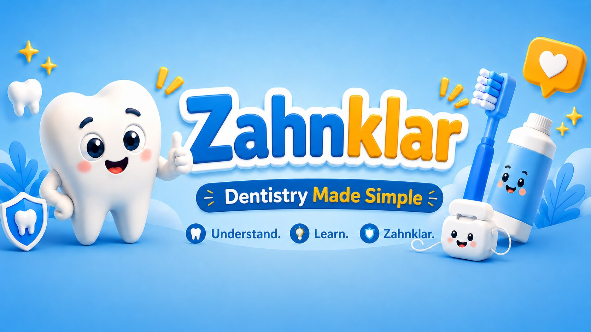

Dentistry Made Simple
Dental knowledge that makes your next visit easier.
Clear explanations about teeth, dental treatments and oral health – calm, visual and without unnecessary jargon.

About Zahnklar
Making dentistry easier to understand
Zahnklar is created by a dentist educated and practising in Germany. The aim is to explain common questions about dental visits, treatments and oral health in a clear and approachable way.
The content is designed to provide orientation, reduce anxiety and help you understand conversations with your local dental professional.
Important information
General education, not an online diagnosis
Zahnklar provides general educational information about dentistry. It does not provide individual dental advice, diagnosis or treatment and cannot replace an examination by a qualified dental professional. Recommendations may vary depending on the patient, clinical findings and local guidance.
YouTube
Watch Zahnklar in English
Step-by-step explanations of dental treatments, common questions and everyday oral health – made simple and without unnecessary fear.